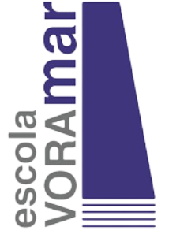

Perfil Digital
Habilitats i Coneixements tecnològics:
Programació
Editar imatges i vídeos
Fer servir eines digitals i comandes
bàsiques com (CTRL c i CTRL p)
Traduir i corregir bé els textos
Fer servir jocs i plataformes didàctiques
com geniventure, science bits, duolingo, caixaforum, scratch, moodle, classroom, softcatalà
Complir totes les
*competències*
Experiència en eines digitals específiques:
Experiència en eines digitals, de molts tipus, de Google (com Canva, Google Docs, Capcut, Google Calendar, Google Academics …) i de Microsoft (Word, Excel, Notepad, Audacity, Visual Code Studio…)
Tornar enrere